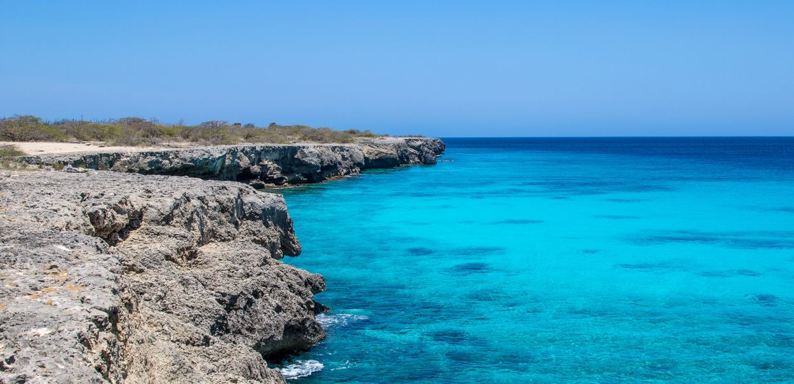

Just east of Curaçao lies the island of Bonaire. Bonaire is known as one of the most popular diving locations in the world. Let's take a look at our favorite attractions in Bonaire.
Home to many dive sites, Bonaire National Marine Park is teeming with life under the sea. While in the water, you wil enjoy swimming with the several hundred species of fish that call the park home. Bonaire is also home to fifty species of coral reef, which are said to be the healthiest reefs in the Atlantic Ocean. If you are new to diving, a local diving instructor will on board to teach you how to dive into the park's precious waters. All visitors are required to pay a nature fee before visiting to help maintain the park for generations to come.
Founded by two Dutch nationals in 1993, this sanctuary cares for the sick and wounded donkeys on the island of Bonaire. Today, the sanctuary boasts over eight hundred donkeys who are lovingly cared and nursed for by the staff. You can buy tickets for a tour of the sanctuary with a local guide. Through this tour, you will immerse yourself in the habitat of the donkeys and be able to pet them. You will also spend time learning how wild donkeys are nutured and rehabilitated at the sanctuary and how you can help them.